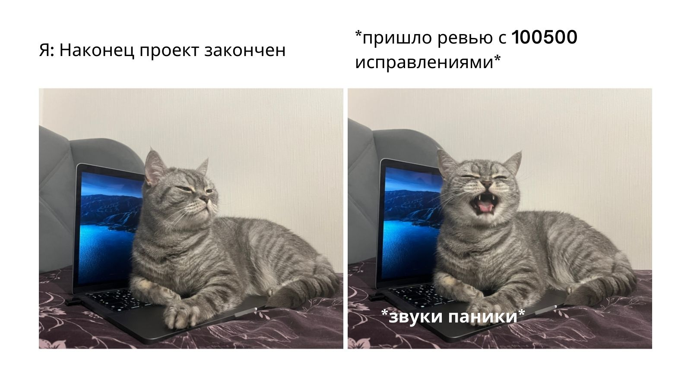
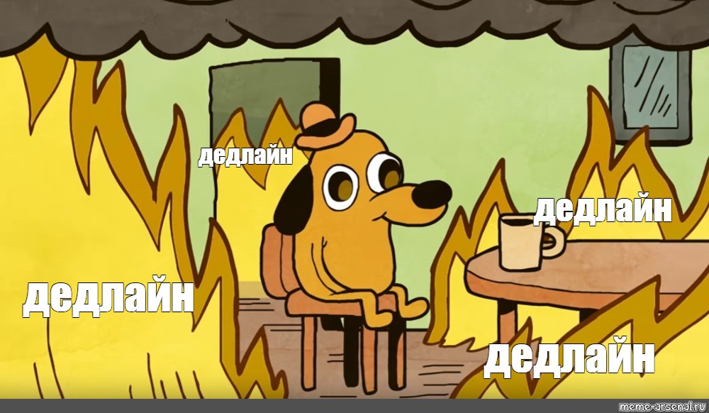
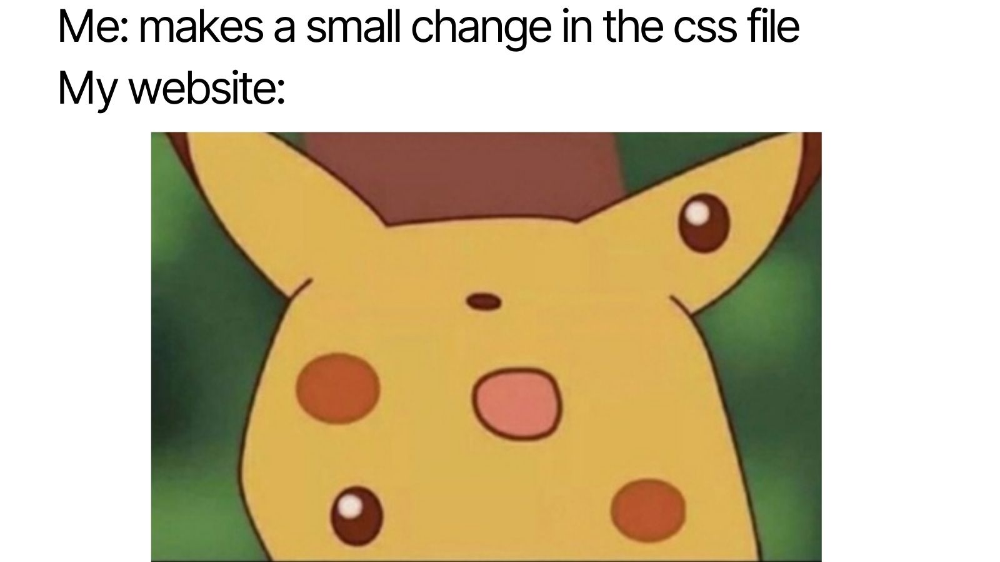

Обо мне

Меня зовут Таня. Рада знакомству! Я имею химическое образование и работаю инженером-химиком. Первый интерес к программированию у меня возник в университете, но из-за нехватки времени он был отодвинут на задний план.
О курсе "Веб-разработчик" от Яндекс.Практикума я узнала от своей сестры, которая тоже является студентом веб-факультета. Я решила попробовать. Самое сложное начать...или нет?
Первые ошибки шаги
«Не ошибается только тот, кто ничего не делает»
Первая трудность с которой я столкнулась в своем обучении - это бесконечные ошибки. Ни в коем случае нельзя сдаваться, ошибки помогают найти зоны роста. Благодаря некоторым ошибкам начинаешь лучше разбираться в теме и приходит больше понимания, как все работает.
Мои впечатления
На данный момент я заканчиваю третий месяц обучения и могу сказать с уверенностью: я не пожалела о своем решении. Сначала было действительно страшно. Каждый проект в начале месяца вызывал шок, однако в конце спринта он уже не казался такой непосильной задачей. Ничто так не мотивирует, как приближающийся дедлайн.
В целом, формат обучения мне близок, удобно проходить занятия на платформе. Теория дана небольшими фрагментами простыми для усвоения, но нужно быть готовым изучать много материала самостоятельно. Кроме этого, для меня большим плюсом является возможность общения с одногруппниками. Это мотивирует и дает осознание, что ты не одинок на этом пути. Спасибо всем, кто дочитал до этого момента!
